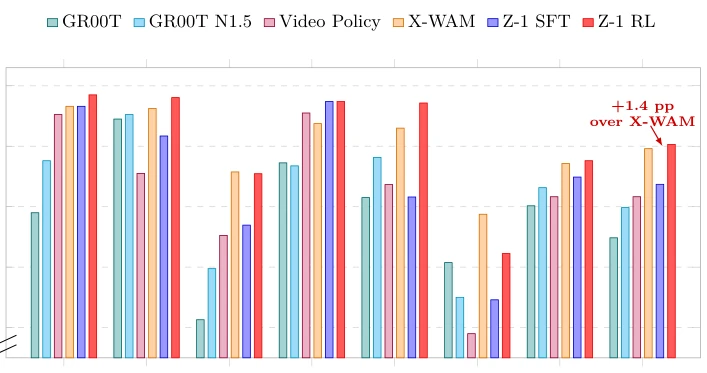
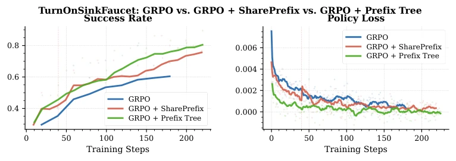
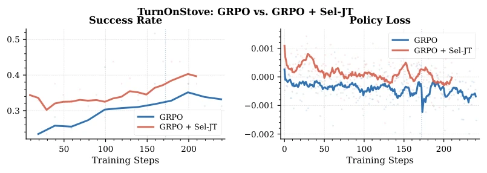
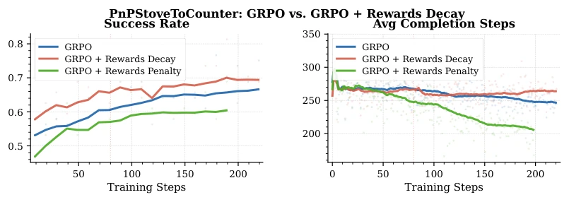

The name Z-1 is quite imposing, but essentially it adds an RL enhancement to π0.5. The author team did not use private data, relying entirely on public RoboCasa demonstrations; this approach is considered a "free-ride" model in the RL community. After SFT hits a bottleneck, RL can indeed trial-and-error, but low efficiency and sparse rewards are common ailments. Z-1 uses GRPO combined with techniques like prefix sharing and reward decay, pulling success rate from 67.4% to 80.6%, which is indeed substantial. However, the stove task is still significantly outperformed by X-WAM, indicating that long-horizon and spatial reasoning remain tough challenges. Do not overhype it; this model still dances on the shoulders of giants, but its steps are more orderly than predecessors, at least proving RL post-training is feasible under public data.
研究动机Motivation
现代机器人操作需要连接语言、视觉和控制，VLA 模型是主流框架。现有系统如 RT-2 [Brohan et al., 2023a]、OpenVLA [Kim et al., 2024]、π0 [Black et al., 2026] 虽强，但大多依赖行为克隆 (BC) 或监督微调 (SFT)。这导致性能受限于演示覆盖 [Chi et al., 2024]，长视界任务中小误差累积会推入未见状态 [Kachaev et al., 2025]。BC/SFT 无法从自身失败中学习，限制了稀疏任务的成功优化。RL 后训练能收集在线数据优化任务级奖励 [Lu et al., 2025]，但 flow-based VLA 的 rollout 成本高、奖励稀疏且冻结 backbone 限制感知修正。Z-1 旨在解决这些挑战，在公开演示下通过 GRPO 提升策略。
Modern robotic manipulation requires connecting language, vision, and control; VLA models are the mainstream framework. Existing systems such as RT-2 [Brohan et al., 2023a], OpenVLA [Kim et al., 2024], π0 [Black et al., 2026] are strong, but most rely on Behavior Cloning (BC) or Supervised Fine-Tuning (SFT). This leads to performance limited by demonstration coverage [Chi et al., 2024], where small errors accumulate in long-horizon tasks pushing into unseen states [Kachaev et al., 2025]. BC/SFT cannot learn from its own failures, limiting success optimization for sparse tasks. RL post-training can collect online data to optimize task-level rewards [Lu et al., 2025], but flow-based VLA rollout is costly, rewards are sparse, and frozen backbones limit perceptual correction. Z-1 aims to address these challenges, improving policies via GRPO under public demonstrations.
Z-1 adopts a two-stage training process. Stage 1 performs per-scene SFT based on π0.5 on public RoboCasa demonstrations. Stage 2 is task-level GRPO post-training. Core innovations lie in four modules: 1. Shared-Prefix GRPO: The same set of rollouts share prefixes, reducing redundant computation and focusing on key interaction segments. 2. Tree-Structured Prefix Branching: Tree-structured branching allows partial prefixes to be trainable, more flexible than flat sharing, reducing over-masking. 3. Success-Aware Reward Decay: Successful trajectories decay rewards based on completion time, encouraging fast completion without penalizing slow success, avoiding excessive pursuit of short trajectories. 4. Selective VLM–Action Expert Joint Training: If AE optimization is insufficient, jointly train VLM and Action Expert to adapt to perception-action co-adaptation. GRPO optimizes clipped group-relative objectives, flow-based actions compute likelihood ratios via SDE conversion.
Evaluated on 24 standard RoboCasa tasks, metric is success rate. Baselines include GR00T, X-WAM, etc. Z-1 RL average success rate 80.6%, an improvement of 13.2 percentage points over SFT, surpassing all compared SOTA. Ablation shows Prefix structure improves signal quality, Joint Training effective on hard tasks (e.g., Stove), Reward Decay more stable than Penalty. Stove task still weaker than X-WAM, indicating long-horizon and recovery mechanisms need improvement. Experiments prove carefully designed GRPO post-training can significantly improve VLA performance without private data.

Figure 1: Category-level and averaged success rates on RoboCasa across all compared methods. PnP and Micro. denote Pick-and-Place and Microwave, respectively. The Avg. group reports the mean success rate over all 24 RoboCasa tasks. Baseline results are taken from the corresponding papers, while Z-1 SFT and Z-1 RL are evaluated by us. Z-1 RL achieves the best average performance among the compared published methods, with an average success rate of 80.6%, improving over X-WAM’s 79.2% by 1.4 percentage points.

Figure 2: Training performance comparison on the TurnOnSinkFaucet task across three GRPO variants: vanilla GRPO, GRPO with a flat shared prefix (SharePrefix), and GRPO with Tree-Structured Prefix Branching (Prefix Tree). Left: success rate over training steps. Right: policy loss over training steps. Both prefix-based variants improve over vanilla GRPO. Prefix Tree achieves the strongest final success rate and a faster loss decrease in this run, while flat SharePrefix provides a more stable alternative in practice.

Figure 3: Training curves on the TurnOnStove task. Left: Success rate over training steps. Right: Policy loss over training steps. Our method (GRPO + Sel-JT, red) consistently achieves higher success rate and lower policy loss compared to the baseline (GRPO, blue), demonstrating the effectiveness of Selective VLM–Action Expert Joint Training.

Figure 4: Training curves on the PnPStoveToCounter task comparing standard GRPO, GRPO with Reward Penalty, and GRPO with Success-Aware Reward Decay. Left: success rate over training steps. Right: average completion steps over training steps, where lower values indicate shorter successful executions. Reward Penalty applies the standard mean- normalized GRPO advantage after completion-aware reward calibration, causing slower successful rollouts to receive negative advantages in all-success groups. This strongly reduces completion steps but slows success-rate improvement. Success-Aware Reward Decay uses a non-negative ordering among successful rollouts, achieving faster success-rate improvement while still encouraging shorter executions. Shaded points represent raw values, and solid lines sho